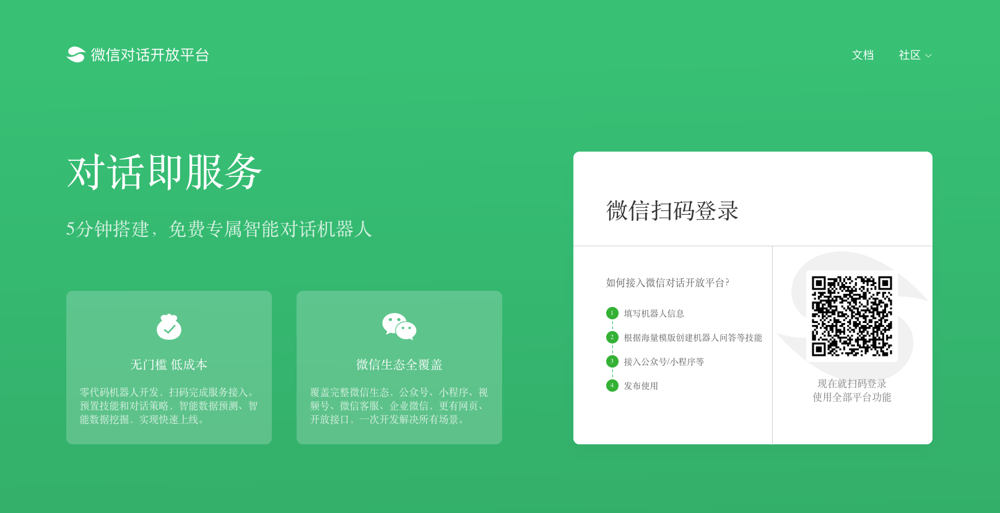

# 平台简介
# 1. 平台简介
微信对话开放平台开放了微信在对话领域积累多年的的智能对话技术，开发者及非开发者可简单、快速地搭建智能对话机器人（智能客服）,并接入公众号、小程序等，为业务赋能，降本增效。也欢迎你加入开发者社区 一起讨论相关问题。

# 2. 平台能力
2.1 完全0基础，没有开发能力的个人/企业运营者，也能免费给你的公众号、小程序一键配置智能客服和营销机器人，5分钟即可实现用户后台的智能对话与互动，降低服务成本，提升营销效率。
2.2 有开发能力的企业、组织，可使用API接口，定制个性化的任务型服务技能，利用智能对话机器人提升企业运营效率，运营成本及用户活跃，可在【预置技能】内体验
# 3. 平台优势
3.1 微信官方授权：唯一由微信官方授权，可接入企业微信，公众号，小程序进行用户服务的智能机器人平台。
3.2 免繁琐设置：即使完全0基础无开发能力的用户，5分钟简单设置问答后，即可零基础搭建智能客服平台接入微信生态，并设置问答型（简单问答）或任务型（高级技能）智能对话技能。
3.3 先进技术能力：平台对话系统由微信对话提供技术支持，应用业内最领先的语义理解模型。
3.4 智能客服：帮助用户快速解答一些基础的平台使用问题，让用户可以更轻松、更快捷地使用我们的平台。
# 4. 服务范围
4.1 可直接在平台上将智能机器人一键接入微信公众号、微信小程序。
4.2 可直接在平台上配置“H5”机器人或通过对接“开放接口”，将智能机器人接入企业网站、APP等。